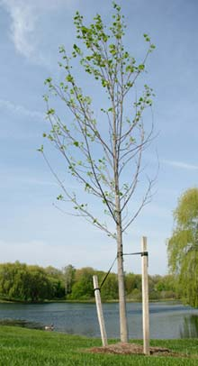

Now is the perfect time for planting a new tree, whether forshade, fruit, landscaping or just plain beauty. Plus, trees produceclean oxygen and absorb climate-changing carbon dioxide.
When you're ready to plant a tree, key elements for success arechoose a good species for the site, dig a hole that's appropriatein width and depth, and provide adequate water.
The garden centers will probably advise that you buy fertilizerand even pesticides for your trees, too. But before you applyeither, consider expert advice that suggests less is truly more.Ohio State University researcherDan Herms, who has adoctorate in entomology, studies the interactions between trees andpesticides and fertilizers, examining both intended and secondaryeffects. Here, Herms explains why less fertilizer and lesspesticide equals healthier, happier trees.
Q: Ideally, what is the most effective way toplant and grow a healthy tree?
A: In my opinion, there are three criticalelements. The first is to choose a tree that's adapted to the sitein terms of your soil pH, the light environment, the localprecipitation patterns and so forth. In many cases it's going to beone that's native to the area ? but not always ? because urbanenvironments are so dramatically altered that they don'tnecessarily resemble the local forest.
Second, plant carefully. A lot of problems are associated withimproper planting techniques. Many times trees are planted toodeeply and the hole isn't wide enough ? it should be much widerthan the rootball. The critical thing is water, especially withnewly transplanted trees. Even for an established tree, I think themost important thing you can do for fostering health is wateringduring droughts. And in my experience, trees do just fine withoutfertilization. We've never fertilized any of our trees and the vastmajority of trees out there have never been fertilized.
Q: Homeowners are often told to applyfertilizers to newly planted trees to promote their growth. Youadvise against this ? why?
A: Fertilization suppresses the natural defensesystems. There's really strong evidence that the faster a treegrows, the lower the level of its defenses. Fertilization alsomakes trees more nutritious to insects. So insects feeding onfertilized trees grow faster, have higher survival rates, and laymore eggs. We found the same in our research of disease.Fertilization weakens the tree's defense response to diseases.Fertilization can even make the trees more susceptible to droughtstress by decreasing the root/shoot ratio (by stimulating leafgrowth, proportionally, more than root growth).
For tree planting tips and instructions, check out'Home Landscaping,' fromMother Earth Newsmagazine. The National Arbor DayFoundation will help you discover a wide selection of treevarieties, their specific growing needs and which trees grow bestwhere.
|
 |
|
|